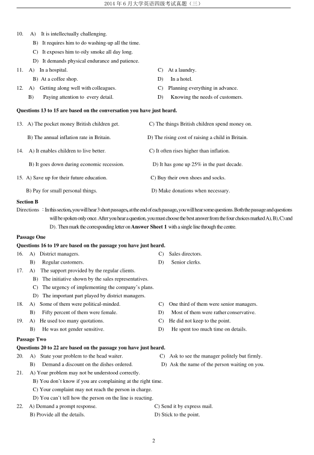
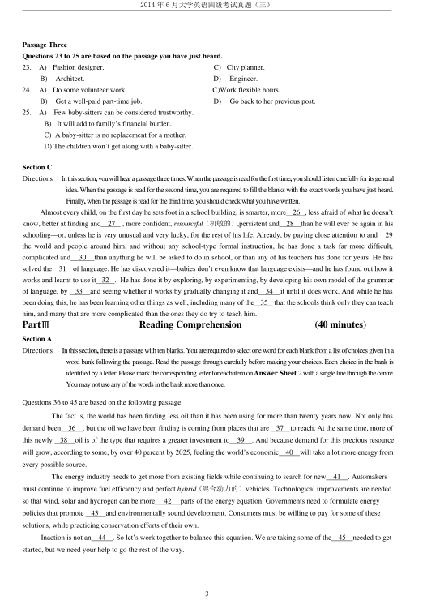
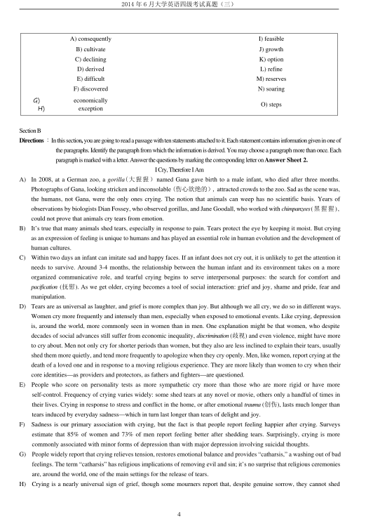
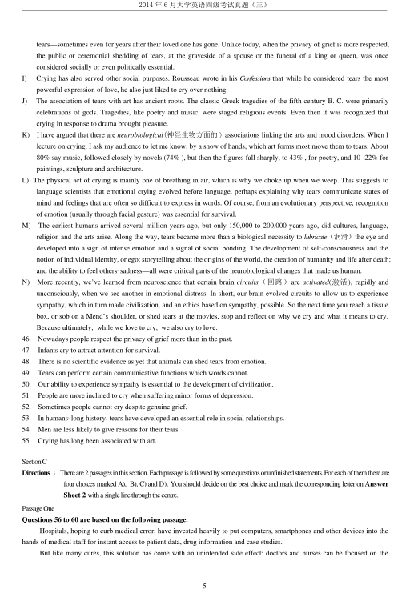
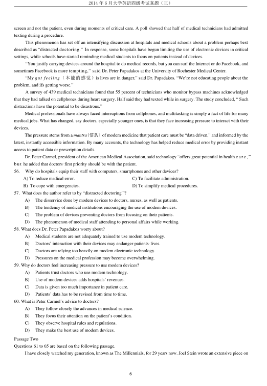
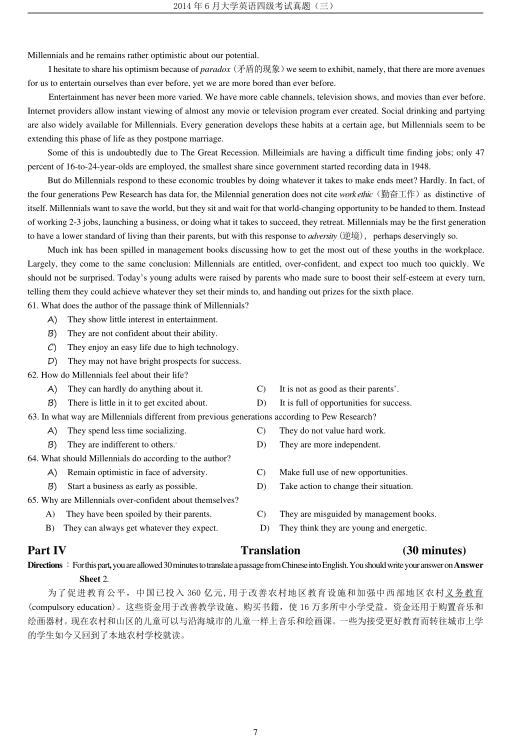

第 1 / 7 页

2014 年6 月大学英语四级考试真题（三）
1
2014 年6 月大学英语四级考试真题（第3 套）
Part I
Writing
(30 minutes)
Directions ：Forthispart,youareallowed30minutestowriteashortessayonthefollowingquestion.Youshouldwriteatleast120 wordsbut
nomorethan180 words.
Suppose a foreign Mend of yours is coming to visit China, what is the first place you would like to take him/her to see and
why?
Part II
Listening Comprehension
(30 minutes)
SectionA
Directions：Inthissection,youwillhear8shortconversationsand2longconversations.Attheendofeachconversation,oneormorequestionswill
beaskedaboutwhatwassaid.Boththeconversationandthequestionswillbespokenonlyonce.Aftereachquestiontherewillbe
a pause.During thepause, you must read thefour choices marked A),B), C)and D), and decidewhichis thebest answer. Then
markthecorrespondingletteronAnswer Sheet 1 withasinglelinethroughthecentre.
1.
A) He has proved to be a better reader than the woman.
B) He has difficulty understanding the book.
C) He cannot get access to the assigned book.
D) He cannot finish his assignment before the deadline.
2.
A)
She will drive the man to the supermarket.
B) The man should buy a car of his own.
C) The man needn’t go shopping every week.
D) She can pick the man up at the grocery store.
3.
A)
Get more food and drinks.
C)
Tidy up the place.
B)
Ask his friend to come over.
D)
Hold a party.
4.
A) The talks can be held any day except this Friday.
B) He could change his schedule to meet John Smith.
C) The first-round talks should start as soon as possible.
D) The woman should contact John Smith first.
5.
A)
He understands the woman’s feelings.
B)
He has gone through a similar experience.
C) The woman should have gone on the field trip.
D) The teacher is just following the regulations.
6.
A)
She will meet the man halfway.
C)
She will ask David to talk less.
C)
She is sorry the man will not come.
D) She has to invite David to the party.
7.
A)
Few students understand Prof. Johnson’s lectures.
B)
Few students meet Prof. Johnson’s requirements.
C)
Many students find Prof. Johnson’s lectures boring.
C)
Many students have dropped Prof. Johnson’s class.
8.
A)
Check their computer files.
C) Study a computer program.
B) Make some computations.
D) Assemble a computer.
Questions 9 to 12 are based on the conversation you have just heard.
9.
A)
It allows him to make a lot of friends.
C) It enables him to apply theory to practice.
B) It requires him to work long hours.
D) It helps him understand people better.
查看 / 复制本页文字
2014 年6 月大学英语四级考试真题（三） 1 2014 年6 月大学英语四级考试真题（第3 套） Part I Writing (30 minutes) Directions ：Forthispart,youareallowed30minutestowriteashortessayonthefollowingquestion.Youshouldwriteatleast120 wordsbut nomorethan180 words. Suppose a foreign Mend of yours is coming to visit China, what is the first place you would like to take him/her to see and why? Part II Listening Comprehension (30 minutes) SectionA Directions：Inthissection,youwillhear8shortconversationsand2longconversations.Attheendofeachconversation,oneormorequestionswill beaskedaboutwhatwassaid.Boththeconversationandthequestionswillbespokenonlyonce.Aftereachquestiontherewillbe a pause.During thepause, you must read thefour choices marked A),B), C)and D), and decidewhichis thebest answer. Then markthecorrespondingletteronAnswer Sheet 1 withasinglelinethroughthecentre. 1. A) He has proved to be a better reader than the woman. B) He has difficulty understanding the book. C) He cannot get access to the assigned book. D) He cannot finish his assignment before the deadline. 2. A) She will drive the man to the supermarket. B) The man should buy a car of his own. C) The man needn’t go shopping every week. D) She can pick the man up at the grocery store. 3. A) Get more food and drinks. C) Tidy up the place. B) Ask his friend to come over. D) Hold a party. 4. A) The talks can be held any day except this Friday. B) He could change his schedule to meet John Smith. C) The first-round talks should start as soon as possible. D) The woman should contact John Smith first. 5. A) He understands the woman’s feelings. B) He has gone through a similar experience. C) The woman should have gone on the field trip. D) The teacher is just following the regulations. 6. A) She will meet the man halfway. C) She will ask David to talk less. C) She is sorry the man will not come. D) She has to invite David to the party. 7. A) Few students understand Prof. Johnson’s lectures. B) Few students meet Prof. Johnson’s requirements. C) Many students find Prof. Johnson’s lectures boring. C) Many students have dropped Prof. Johnson’s class. 8. A) Check their computer files. C) Study a computer program. B) Make some computations. D) Assemble a computer. Questions 9 to 12 are based on the conversation you have just heard. 9. A) It allows him to make a lot of friends. C) It enables him to apply theory to practice. B) It requires him to work long hours. D) It helps him understand people better.
第 2 / 7 页

2014 年6 月大学英语四级考试真题（三）
2
10.
A)
It is intellectually challenging.
B) It requires him to do washing-up all the time.
C) It exposes him to oily smoke all day long.
D) It demands physical endurance and patience.
11.
A)
In a hospital.
C)
At a laundry.
B) At a coffee shop.
D)
In a hotel.
12.
A)
Getting along well with colleagues.
C)
Planning everything in advance.
B)
Paying attention to every detail.
D)
Knowing the needs of customers.
Questions 13 to 15 are based on the conversation you have just heard.
13. A) The pocket money British children get.
C) The things British children spend money on.
B) The annual inflation rate in Britain.
D) The rising cost of raising a child in Britain.
14.
A) It enables children to live better.
C) It often rises higher than inflation.
B) It goes down during economic recession.
D) It has gone up 25% in the past decade.
15. A) Save up for their future education.
C) Buy their own shoes and socks.
B) Pay for small personal things.
D) Make donations when necessary.
Section B
Directions ：Inthissection,youwillhear3shortpassages,attheendofeachpassage,youwillhearsomequestions.Boththepassageandquestions
willbespokenonlyonce.Afteryouhearaquestion,youmustchoosethebestanswerfromthefourchoicesmarkedA),B),C)and
D). ThenmarkthecorrespondingletteronAnswer Sheet 1 withasinglelinethroughthecentre.
Passage One
Questions 16 to 19 are based on the passage you have just heard.
16.
A)
District managers.
C)
Sales directors.
B)
Regular customers.
D)
Senior clerks.
17.
A)
The support provided by the regular clients.
B) The initiative shown by the sales representatives.
C) The urgency of implementing the company’s plans.
D) The important part played by district managers.
18.
A)
Some of them were political-minded.
C)
One third of them were senior managers.
B)
Fifty percent of them were female.
D)
Most of them were ratherconservative.
19.
A)
He used too many quotations.
C)
He did not keep to the point.
B)
He was not gender sensitive.
D)
He spent too much time on details.
Passage Two
Questions 20 to 22 are based on the passage you have just heard.
20.
A)
State your problem to the head waiter.
C)
Ask to see the manager politely but firmly.
B)
Demand a discount on the dishes ordered.
D) Ask the name of the person waiting on you.
21.
A) Your problem may not be understood correctly.
B) You don’t know if you are complaining at the right time.
C) Your complaint may not reach the person in charge.
D) You can’t tell how the person on the line is reacting.
22.
A) Demand a prompt response.
C) Send it by express mail.
B) Provide all the details.
D) Stick to the point.
查看 / 复制本页文字
2014 年6 月大学英语四级考试真题（三） 2 10. A) It is intellectually challenging. B) It requires him to do washing-up all the time. C) It exposes him to oily smoke all day long. D) It demands physical endurance and patience. 11. A) In a hospital. C) At a laundry. B) At a coffee shop. D) In a hotel. 12. A) Getting along well with colleagues. C) Planning everything in advance. B) Paying attention to every detail. D) Knowing the needs of customers. Questions 13 to 15 are based on the conversation you have just heard. 13. A) The pocket money British children get. C) The things British children spend money on. B) The annual inflation rate in Britain. D) The rising cost of raising a child in Britain. 14. A) It enables children to live better. C) It often rises higher than inflation. B) It goes down during economic recession. D) It has gone up 25% in the past decade. 15. A) Save up for their future education. C) Buy their own shoes and socks. B) Pay for small personal things. D) Make donations when necessary. Section B Directions ：Inthissection,youwillhear3shortpassages,attheendofeachpassage,youwillhearsomequestions.Boththepassageandquestions willbespokenonlyonce.Afteryouhearaquestion,youmustchoosethebestanswerfromthefourchoicesmarkedA),B),C)and D). ThenmarkthecorrespondingletteronAnswer Sheet 1 withasinglelinethroughthecentre. Passage One Questions 16 to 19 are based on the passage you have just heard. 16. A) District managers. C) Sales directors. B) Regular customers. D) Senior clerks. 17. A) The support provided by the regular clients. B) The initiative shown by the sales representatives. C) The urgency of implementing the company’s plans. D) The important part played by district managers. 18. A) Some of them were political-minded. C) One third of them were senior managers. B) Fifty percent of them were female. D) Most of them were ratherconservative. 19. A) He used too many quotations. C) He did not keep to the point. B) He was not gender sensitive. D) He spent too much time on details. Passage Two Questions 20 to 22 are based on the passage you have just heard. 20. A) State your problem to the head waiter. C) Ask to see the manager politely but firmly. B) Demand a discount on the dishes ordered. D) Ask the name of the person waiting on you. 21. A) Your problem may not be understood correctly. B) You don’t know if you are complaining at the right time. C) Your complaint may not reach the person in charge. D) You can’t tell how the person on the line is reacting. 22. A) Demand a prompt response. C) Send it by express mail. B) Provide all the details. D) Stick to the point.
第 3 / 7 页

2014 年6 月大学英语四级考试真题（三）
3
Passage Three
Questions 23 to 25 are based on the passage you have just heard.
23.
A)
Fashion designer.
C) City planner.
B)
Architect.
D)
Engineer.
24.
A)
Do some volunteer work.
C)Work flexible hours.
B)
Get a well-paid part-time job.
D)
Go back to her previous post.
25.
A)
Few baby-sitters can be considered trustworthy.
B) It will add to family’s financial burden.
C) A baby-sitter is no replacement for a mother.
D) The children won’t get along with a baby-sitter.
Section C
Directions ：Inthissection,youwillhearapassagethreetimes.Whenthepassageisreadforthefirsttime,youshouldlistencarefullyforitsgeneral
idea. When the passage is read for the second time, you are required to fill the blanks with the exact words you have just heard.
Finally,whenthepassageisreadforthethirdtime,youshouldcheckwhatyouhavewritten.
Almost every child, on the first day he sets foot in a school building, is smarter, more
26 , less afraid of what he doesn’t
know, better at finding and
27
, more confident, resourceful（机敏的）,persistent and
28
than he will ever be again in his
schooling—or, unless he is very unusual and very lucky, for the rest of his life. Already, by paying close attention to and
29
the world and people around him, and without any school-type formal instruction, he has done a task far more difficult,
complicated and
30
than anything he will be asked to do in school, or than any of his teachers has done for years. He has
solved the
31
of language. He has discovered it—babies don’t even know that language exists—and he has found out how it
works and learnt to use it 32 . He has done it by exploring, by experimenting, by developing his own model of the grammar
of language, by
33
and seeing whether it works by gradually changing it and
34
it until it does work. And while he has
been doing this, he has been learning other things as well, including many of the
35
that the schools think only they can teach
him, and many that are more complicated than the ones they do try to teach him.
PartⅢ
Reading Comprehension
(40 minutes)
Section A
Directions ：Inthissection,thereisapassagewithtenblanks.Youarerequiredtoselectonewordforeachblankfromalistofchoicesgivenina
word bank following the passage. Read the passage through carefully before making your choices. Each choice in the bank is
identifiedbyaletter.PleasemarkthecorrespondingletterforeachitemonAnswer Sheet 2withasinglelinethroughthecentre.
Youmaynotuseanyofthewordsinthebankmorethanonce.
Questions 36 to 45 are based on the following passage.
The fact is, the world has been finding less oil than it has been using for more than twenty years now. Not only has
demand been
36
, but the oil we have been finding is coming from places that are
37
to reach. At the same time, more of
this newly
38
oil is of the type that requires a greater investment to
39
. And because demand for this precious resource
will grow, according to some, by over 40 percent by 2025, fueling the world’s economic
40
will take a lot more energy from
every possible source.
The energy industry needs to get more from existing fields while continuing to search for new
41
. Automakers
must continue to improve fuel efficiency and perfect hybrid (混合动力的）vehicles. Technological improvements are needed
so that wind, solar and hydrogen can be more
42
parts of the energy equation. Governments need to formulate energy
policies that promote
43
and environmentally sound development. Consumers must be willing to pay for some of these
solutions, while practicing conservation efforts of their own.
Inaction is not an
44
. So let’s work together to balance this equation. We are taking some of the
45
needed to get
started, but we need your help to go the rest of the way.
查看 / 复制本页文字
2014 年6 月大学英语四级考试真题（三） 3 Passage Three Questions 23 to 25 are based on the passage you have just heard. 23. A) Fashion designer. C) City planner. B) Architect. D) Engineer. 24. A) Do some volunteer work. C)Work flexible hours. B) Get a well-paid part-time job. D) Go back to her previous post. 25. A) Few baby-sitters can be considered trustworthy. B) It will add to family’s financial burden. C) A baby-sitter is no replacement for a mother. D) The children won’t get along with a baby-sitter. Section C Directions ：Inthissection,youwillhearapassagethreetimes.Whenthepassageisreadforthefirsttime,youshouldlistencarefullyforitsgeneral idea. When the passage is read for the second time, you are required to fill the blanks with the exact words you have just heard. Finally,whenthepassageisreadforthethirdtime,youshouldcheckwhatyouhavewritten. Almost every child, on the first day he sets foot in a school building, is smarter, more 26 , less afraid of what he doesn’t know, better at finding and 27 , more confident, resourceful（机敏的）,persistent and 28 than he will ever be again in his schooling—or, unless he is very unusual and very lucky, for the rest of his life. Already, by paying close attention to and 29 the world and people around him, and without any school-type formal instruction, he has done a task far more difficult, complicated and 30 than anything he will be asked to do in school, or than any of his teachers has done for years. He has solved the 31 of language. He has discovered it—babies don’t even know that language exists—and he has found out how it works and learnt to use it 32 . He has done it by exploring, by experimenting, by developing his own model of the grammar of language, by 33 and seeing whether it works by gradually changing it and 34 it until it does work. And while he has been doing this, he has been learning other things as well, including many of the 35 that the schools think only they can teach him, and many that are more complicated than the ones they do try to teach him. PartⅢ Reading Comprehension (40 minutes) Section A Directions ：Inthissection,thereisapassagewithtenblanks.Youarerequiredtoselectonewordforeachblankfromalistofchoicesgivenina word bank following the passage. Read the passage through carefully before making your choices. Each choice in the bank is identifiedbyaletter.PleasemarkthecorrespondingletterforeachitemonAnswer Sheet 2withasinglelinethroughthecentre. Youmaynotuseanyofthewordsinthebankmorethanonce. Questions 36 to 45 are based on the following passage. The fact is, the world has been finding less oil than it has been using for more than twenty years now. Not only has demand been 36 , but the oil we have been finding is coming from places that are 37 to reach. At the same time, more of this newly 38 oil is of the type that requires a greater investment to 39 . And because demand for this precious resource will grow, according to some, by over 40 percent by 2025, fueling the world’s economic 40 will take a lot more energy from every possible source. The energy industry needs to get more from existing fields while continuing to search for new 41 . Automakers must continue to improve fuel efficiency and perfect hybrid (混合动力的）vehicles. Technological improvements are needed so that wind, solar and hydrogen can be more 42 parts of the energy equation. Governments need to formulate energy policies that promote 43 and environmentally sound development. Consumers must be willing to pay for some of these solutions, while practicing conservation efforts of their own. Inaction is not an 44 . So let’s work together to balance this equation. We are taking some of the 45 needed to get started, but we need your help to go the rest of the way.
第 4 / 7 页

2014 年6 月大学英语四级考试真题（三）
4
SectionB
Directions：Inthissection,youaregoingtoreadapassagewithtenstatementsattachedtoit.Eachstatementcontainsinformationgiveninoneof
theparagraphs.Identifytheparagraphfromwhichtheinformationisderived.Youmaychoosea paragraph morethanonce. Each
paragraphismarkedwithaletter.AnswerthequestionsbymarkingthecorrespondingletteronAnswer Sheet 2.
ICry,ThereforeIAm
A)
In 2008, at a German zoo, a gorilla(大猩猩）named Gana gave birth to a male infant, who died after three months.
Photographs of Gana, looking stricken and inconsolable (伤心欲绝的）, attracted crowds to the zoo. Sad as the scene was,
the humans, not Gana, were the only ones crying. The notion that animals can weep has no scientific basis. Years of
observations by biologists Dian Fossey, who observed gorillas, and Jane Goodall, who worked with chimpanzees(黑猩猩),
could not prove that animals cry tears from emotion.
B)
It’s true that many animals shed tears, especially in response to pain. Tears protect the eye by keeping it moist. But crying
as an expression of feeling is unique to humans and has played an essential role in human evolution and the development of
human cultures.
C)
Within two days an infant can imitate sad and happy faces. If an infant does not cry out, it is unlikely to get the attention it
needs to survive. Around 3-4 months, the relationship between the human infant and its environment takes on a more
organized communicative role, and tearful crying begins to serve interpersonal purposes: the search for comfort and
pacification (抚慰). As we get older, crying becomes a tool of social interaction: grief and joy, shame and pride, fear and
manipulation.
D)
Tears are as universal as laughter, and grief is more complex than joy. But although we all cry, we do so in different ways.
Women cry more frequently and intensely than men, especially when exposed to emotional events. Like crying, depression
is, around the world, more commonly seen in women than in men. One explanation might be that women, who despite
decades of social advances still suffer from economic inequality, discrimination (歧视) and even violence, might have more
to cry about. Men not only cry for shorter periods than women, but they also are less inclined to explain their tears, usually
shed them more quietly, and tend more frequently to apologize when they cry openly. Men, like women, report crying at the
death of a loved one and in response to a moving religious experience. They are more likely than women to cry when their
core identities—as providers and protectors, as fathers and fighters—are questioned.
E)
People who score on personality tests as more sympathetic cry more than those who are more rigid or have more
self-control. Frequency of crying varies widely: some shed tears at any novel or movie, others only a handful of times in
their lives. Crying in response to stress and conflict in the home, or after emotional trauma (创伤), lasts much longer than
tears induced by everyday sadness—which in turn last longer than tears of delight and joy.
F)
Sadness is our primary association with crying, but the fact is that people report feeling happier after crying. Surveys
estimate that 85% of women and 73% of men report feeling better after shedding tears. Surprisingly, crying is more
commonly associated with minor forms of depression than with major depression involving suicidal thoughts.
G)
People widely report that crying relieves tension, restores emotional balance and provides “catharsis,” a washing out of bad
feelings. The term “catharsis” has religious implications of removing evil and sin; it’s no surprise that religious ceremonies
are, around the world, one of the main settings for the release of tears.
H)
Crying is a nearly universal sign of grief, though some mourners report that, despite genuine sorrow, they cannot shed
A) consequently
I) feasible
B) cultivate
J) growth
C) declining
K) option
D) derived
L) refine
E) difficult
M) reserves
F) discovered
N) soaring
G)
economically
H)
exception
O) steps
查看 / 复制本页文字
2014 年6 月大学英语四级考试真题（三） 4 SectionB Directions：Inthissection,youaregoingtoreadapassagewithtenstatementsattachedtoit.Eachstatementcontainsinformationgiveninoneof theparagraphs.Identifytheparagraphfromwhichtheinformationisderived.Youmaychoosea paragraph morethanonce. Each paragraphismarkedwithaletter.AnswerthequestionsbymarkingthecorrespondingletteronAnswer Sheet 2. ICry,ThereforeIAm A) In 2008, at a German zoo, a gorilla(大猩猩）named Gana gave birth to a male infant, who died after three months. Photographs of Gana, looking stricken and inconsolable (伤心欲绝的）, attracted crowds to the zoo. Sad as the scene was, the humans, not Gana, were the only ones crying. The notion that animals can weep has no scientific basis. Years of observations by biologists Dian Fossey, who observed gorillas, and Jane Goodall, who worked with chimpanzees(黑猩猩), could not prove that animals cry tears from emotion. B) It’s true that many animals shed tears, especially in response to pain. Tears protect the eye by keeping it moist. But crying as an expression of feeling is unique to humans and has played an essential role in human evolution and the development of human cultures. C) Within two days an infant can imitate sad and happy faces. If an infant does not cry out, it is unlikely to get the attention it needs to survive. Around 3-4 months, the relationship between the human infant and its environment takes on a more organized communicative role, and tearful crying begins to serve interpersonal purposes: the search for comfort and pacification (抚慰). As we get older, crying becomes a tool of social interaction: grief and joy, shame and pride, fear and manipulation. D) Tears are as universal as laughter, and grief is more complex than joy. But although we all cry, we do so in different ways. Women cry more frequently and intensely than men, especially when exposed to emotional events. Like crying, depression is, around the world, more commonly seen in women than in men. One explanation might be that women, who despite decades of social advances still suffer from economic inequality, discrimination (歧视) and even violence, might have more to cry about. Men not only cry for shorter periods than women, but they also are less inclined to explain their tears, usually shed them more quietly, and tend more frequently to apologize when they cry openly. Men, like women, report crying at the death of a loved one and in response to a moving religious experience. They are more likely than women to cry when their core identities—as providers and protectors, as fathers and fighters—are questioned. E) People who score on personality tests as more sympathetic cry more than those who are more rigid or have more self-control. Frequency of crying varies widely: some shed tears at any novel or movie, others only a handful of times in their lives. Crying in response to stress and conflict in the home, or after emotional trauma (创伤), lasts much longer than tears induced by everyday sadness—which in turn last longer than tears of delight and joy. F) Sadness is our primary association with crying, but the fact is that people report feeling happier after crying. Surveys estimate that 85% of women and 73% of men report feeling better after shedding tears. Surprisingly, crying is more commonly associated with minor forms of depression than with major depression involving suicidal thoughts. G) People widely report that crying relieves tension, restores emotional balance and provides “catharsis,” a washing out of bad feelings. The term “catharsis” has religious implications of removing evil and sin; it’s no surprise that religious ceremonies are, around the world, one of the main settings for the release of tears. H) Crying is a nearly universal sign of grief, though some mourners report that, despite genuine sorrow, they cannot shed A) consequently I) feasible B) cultivate J) growth C) declining K) option D) derived L) refine E) difficult M) reserves F) discovered N) soaring G) economically H) exception O) steps
第 5 / 7 页

2014 年6 月大学英语四级考试真题（三）
5
tears—sometimes even for years after their loved one has gone. Unlike today, when the privacy of grief is more respected,
the public or ceremonial shedding of tears, at the graveside of a spouse or the funeral of a king or queen, was once
considered socially or even politically essential.
I)
Crying has also served other social purposes. Rousseau wrote in his Confessions that while he considered tears the most
powerful expression of love, he also just liked to cry over nothing.
J)
The association of tears with art has ancient roots. The classic Greek tragedies of the fifth century B. C. were primarily
celebrations of gods. Tragedies, like poetry and music, were staged religious events. Even then it was recognized that
crying in response to drama brought pleasure.
K)
I have argued that there are neurobiological(神经生物方面的）associations linking the arts and mood disorders. When I
lecture on crying, I ask my audience to let me know, by a show of hands, which art forms most move them to tears. About
80% say music, followed closely by novels (74% ), but then the figures fall sharply, to 43% , for poetry, and 10 -22% for
paintings, sculpture and architecture.
L) The physical act of crying is mainly one of breathing in air, which is why we choke up when we weep. This suggests to
language scientists that emotional crying evolved before language, perhaps explaining why tears communicate states of
mind and feelings that are often so difficult to express in words. Of course, from an evolutionary perspective, recognition
of emotion (usually through facial gesture) was essential for survival.
M)
The earliest humans arrived several million years ago, but only 150,000 to 200,000 years ago, did cultures, language,
religion and the arts arise. Along the way, tears became more than a biological necessity to lubricate（润滑）the eye and
developed into a sign of intense emotion and a signal of social bonding. The development of self-consciousness and the
notion of individual identity, or ego; storytelling about the origins of the world, the creation of humanity and life after death;
and the ability to feel others, sadness—all were critical parts of the neurobiological changes that made us human.
N)
More recently, we’ve learned from neuroscience that certain brain circuits（回路）are activated(激活), rapidly and
unconsciously, when we see another in emotional distress. In short, our brain evolved circuits to allow us to experience
sympathy, which in turn made civilization, and an ethics based on sympathy, possible. So the next time you reach a tissue
box, or sob on a Mend’s shoulder, or shed tears at the movies, stop and reflect on why we cry and what it means to cry.
Because ultimately, while we love to cry, we also cry to love.
46.
Nowadays people respect the privacy of grief more than in the past.
47.
Infants cry to attract attention for survival.
48.
There is no scientific evidence as yet that animals can shed tears from emotion.
49.
Tears can perform certain communicative functions which words cannot.
50.
Our ability to experience sympathy is essential to the development of civilization.
51.
People are more inclined to cry when suffering minor forms of depression.
52.
Sometimes people cannot cry despite genuine grief.
53.
In humans, long history, tears have developed an essential role in social relationships.
54.
Men are less likely to give reasons for their tears.
55.
Crying has long been associated with art.
SectionC
Directions：Thereare2passagesinthissection.Eachpassageisfollowedbysomequestionsorunfinishedstatements.Foreachofthemthereare
four choices marked A), B), C) and D). You should decide on the best choice and mark the corresponding letter on Answer
Sheet 2 withasinglelinethroughthecentre.
PassageOne
Questions 56 to 60 are based on the following passage.
Hospitals, hoping to curb medical error, have invested heavily to put computers, smartphones and other devices into the
hands of medical staff for instant access to patient data, drug information and case studies.
But like many cures, this solution has come with an unintended side effect: doctors and nurses can be focused on the
查看 / 复制本页文字
2014 年6 月大学英语四级考试真题（三） 5 tears—sometimes even for years after their loved one has gone. Unlike today, when the privacy of grief is more respected, the public or ceremonial shedding of tears, at the graveside of a spouse or the funeral of a king or queen, was once considered socially or even politically essential. I) Crying has also served other social purposes. Rousseau wrote in his Confessions that while he considered tears the most powerful expression of love, he also just liked to cry over nothing. J) The association of tears with art has ancient roots. The classic Greek tragedies of the fifth century B. C. were primarily celebrations of gods. Tragedies, like poetry and music, were staged religious events. Even then it was recognized that crying in response to drama brought pleasure. K) I have argued that there are neurobiological(神经生物方面的）associations linking the arts and mood disorders. When I lecture on crying, I ask my audience to let me know, by a show of hands, which art forms most move them to tears. About 80% say music, followed closely by novels (74% ), but then the figures fall sharply, to 43% , for poetry, and 10 -22% for paintings, sculpture and architecture. L) The physical act of crying is mainly one of breathing in air, which is why we choke up when we weep. This suggests to language scientists that emotional crying evolved before language, perhaps explaining why tears communicate states of mind and feelings that are often so difficult to express in words. Of course, from an evolutionary perspective, recognition of emotion (usually through facial gesture) was essential for survival. M) The earliest humans arrived several million years ago, but only 150,000 to 200,000 years ago, did cultures, language, religion and the arts arise. Along the way, tears became more than a biological necessity to lubricate（润滑）the eye and developed into a sign of intense emotion and a signal of social bonding. The development of self-consciousness and the notion of individual identity, or ego; storytelling about the origins of the world, the creation of humanity and life after death; and the ability to feel others, sadness—all were critical parts of the neurobiological changes that made us human. N) More recently, we’ve learned from neuroscience that certain brain circuits（回路）are activated(激活), rapidly and unconsciously, when we see another in emotional distress. In short, our brain evolved circuits to allow us to experience sympathy, which in turn made civilization, and an ethics based on sympathy, possible. So the next time you reach a tissue box, or sob on a Mend’s shoulder, or shed tears at the movies, stop and reflect on why we cry and what it means to cry. Because ultimately, while we love to cry, we also cry to love. 46. Nowadays people respect the privacy of grief more than in the past. 47. Infants cry to attract attention for survival. 48. There is no scientific evidence as yet that animals can shed tears from emotion. 49. Tears can perform certain communicative functions which words cannot. 50. Our ability to experience sympathy is essential to the development of civilization. 51. People are more inclined to cry when suffering minor forms of depression. 52. Sometimes people cannot cry despite genuine grief. 53. In humans, long history, tears have developed an essential role in social relationships. 54. Men are less likely to give reasons for their tears. 55. Crying has long been associated with art. SectionC Directions：Thereare2passagesinthissection.Eachpassageisfollowedbysomequestionsorunfinishedstatements.Foreachofthemthereare four choices marked A), B), C) and D). You should decide on the best choice and mark the corresponding letter on Answer Sheet 2 withasinglelinethroughthecentre. PassageOne Questions 56 to 60 are based on the following passage. Hospitals, hoping to curb medical error, have invested heavily to put computers, smartphones and other devices into the hands of medical staff for instant access to patient data, drug information and case studies. But like many cures, this solution has come with an unintended side effect: doctors and nurses can be focused on the
第 6 / 7 页

2014 年6 月大学英语四级考试真题（三）
6
screen and not the patient, even during moments of critical care. A poll showed that half of medical technicians had admitted
texting during a procedure.
This phenomenon has set off an intensifying discussion at hospitals and medical schools about a problem perhaps best
described as “distracted doctoring.” In response, some hospitals have begun limiting the use of electronic devices in critical
settings, while schools have started reminding medical students to focus on patients instead of devices.
“You justify carrying devices around the hospital to do medical records, but you can surf the Internet or do Facebook, and
sometimes Facebook is more tempting,” said Dr. Peter Papadakos at the University of Rochester Medical Center.
“My gut feeling（本能的感觉）is lives are in danger,” said Dr. Papadakos. “We’re not educating people about the
problem, and ifs getting worse.”
A survey of 439 medical technicians found that 55 percent of technicians who monitor bypass machines acknowledged
that they had talked on cellphones during heart surgery. Half said they had texted while in surgery. The study concluded, “ Such
distractions have the potential to be disastrous.”
Medical professionals have always faced interruptions from cellphones, and multitasking is simply a fact of life for many
medical jobs. What has changed, say doctors, especially younger ones, is that they face increasing pressure to interact with their
devices.
The pressure stems from a mantra(信条）of modem medicine that patient care must be “data driven,” and informed by the
latest, instantly accessible information. By many accounts, the technology has helped reduce medical error by providing instant
access to patient data or prescription details.
Dr. Peter Carmel, president of the American Medical Association, said technology “offers great potential in health c a r e , ”
b u t he added that doctors, first priority should be with the patient.
56.
Why do hospitals equip their staff with computers, smartphones and other devices?
A) To reduce medical error.
C) To facilitate administration.
B) To cope with emergencies.
D) To simplify medical procedures.
57. What does the author refer to by “distracted doctoring”?
A)
The disservice done by modem devices to doctors, nurses, as well as patients.
B)
The tendency of medical institutions encouraging the use of modem devices.
C)
The problem of devices preventing doctors from focusing on their patients.
D)
The phenomenon of medical staff attending to personal affairs while working.
58. What does Dr. Peter Papadakos worry about?
A)
Medical students are not adequately trained to use modem technology.
B)
Doctors’ interaction with their devices may endanger patients, lives.
C)
Doctors are relying too heavily on modem electronic technology.
D)
Pressures on the medical profession may become overwhelming.
59. Why do doctors feel increasing pressure to use modem devices?
A)
Patients trust doctors who use modem technology.
B)
Use of modem devices adds hospitals’ revenues.
C)
Data is given too much importance in patient care.
D)
Patients’ data has to be revised from time to time.
60. What is Peter Carmel’s advice to doctors?
A)
They follow closely the advances in medical science.
B)
They focus their attention on the patient’s condition.
C)
They observe hospital rules and regulations.
D)
They make the best use of modem devices.
Passage Two
Questions 61 to 65 are based on the following passage.
I have closely watched my generation, known as The Millennials, for 29 years now. Joel Stein wrote an extensive piece on
查看 / 复制本页文字
2014 年6 月大学英语四级考试真题（三） 6 screen and not the patient, even during moments of critical care. A poll showed that half of medical technicians had admitted texting during a procedure. This phenomenon has set off an intensifying discussion at hospitals and medical schools about a problem perhaps best described as “distracted doctoring.” In response, some hospitals have begun limiting the use of electronic devices in critical settings, while schools have started reminding medical students to focus on patients instead of devices. “You justify carrying devices around the hospital to do medical records, but you can surf the Internet or do Facebook, and sometimes Facebook is more tempting,” said Dr. Peter Papadakos at the University of Rochester Medical Center. “My gut feeling（本能的感觉）is lives are in danger,” said Dr. Papadakos. “We’re not educating people about the problem, and ifs getting worse.” A survey of 439 medical technicians found that 55 percent of technicians who monitor bypass machines acknowledged that they had talked on cellphones during heart surgery. Half said they had texted while in surgery. The study concluded, “ Such distractions have the potential to be disastrous.” Medical professionals have always faced interruptions from cellphones, and multitasking is simply a fact of life for many medical jobs. What has changed, say doctors, especially younger ones, is that they face increasing pressure to interact with their devices. The pressure stems from a mantra(信条）of modem medicine that patient care must be “data driven,” and informed by the latest, instantly accessible information. By many accounts, the technology has helped reduce medical error by providing instant access to patient data or prescription details. Dr. Peter Carmel, president of the American Medical Association, said technology “offers great potential in health c a r e , ” b u t he added that doctors, first priority should be with the patient. 56. Why do hospitals equip their staff with computers, smartphones and other devices? A) To reduce medical error. C) To facilitate administration. B) To cope with emergencies. D) To simplify medical procedures. 57. What does the author refer to by “distracted doctoring”? A) The disservice done by modem devices to doctors, nurses, as well as patients. B) The tendency of medical institutions encouraging the use of modem devices. C) The problem of devices preventing doctors from focusing on their patients. D) The phenomenon of medical staff attending to personal affairs while working. 58. What does Dr. Peter Papadakos worry about? A) Medical students are not adequately trained to use modem technology. B) Doctors’ interaction with their devices may endanger patients, lives. C) Doctors are relying too heavily on modem electronic technology. D) Pressures on the medical profession may become overwhelming. 59. Why do doctors feel increasing pressure to use modem devices? A) Patients trust doctors who use modem technology. B) Use of modem devices adds hospitals’ revenues. C) Data is given too much importance in patient care. D) Patients’ data has to be revised from time to time. 60. What is Peter Carmel’s advice to doctors? A) They follow closely the advances in medical science. B) They focus their attention on the patient’s condition. C) They observe hospital rules and regulations. D) They make the best use of modem devices. Passage Two Questions 61 to 65 are based on the following passage. I have closely watched my generation, known as The Millennials, for 29 years now. Joel Stein wrote an extensive piece on
第 7 / 7 页

2014 年6 月大学英语四级考试真题（三）
7
Millennials and he remains rather optimistic about our potential.
I hesitate to share his optimism because of paradox (矛盾的现象）we seem to exhibit, namely, that there are more avenues
for us to entertain ourselves than ever before, yet we are more bored than ever before.
Entertainment has never been more varied. We have more cable channels, television shows, and movies than ever before.
Internet providers allow instant viewing of almost any movie or television program ever created. Social drinking and partying
are also widely available for Millennials. Every generation develops these habits at a certain age, but Millennials seem to be
extending this phase of life as they postpone marriage.
Some of this is undoubtedly due to The Great Recession. Milleimials are having a difficult time finding jobs; only 47
percent of 16-to-24-year-olds are employed, the smallest share since government started recording data in 1948.
But do Millennials respond to these economic troubles by doing whatever it takes to make ends meet? Hardly. In fact, of
the four generations Pew Research has data for, the Milennial generation does not cite workethic（勤奋工作）as distinctive of
itself. Millennials want to save the world, but they sit and wait for that world-changing opportunity to be handed to them. Instead
of working 2-3 jobs, launching a business, or doing what it takes to succeed, they retreat. Millennials may be the first generation
to have a lower standard of living than their parents, but with this response to adversity(逆境), perhaps deservingly so.
Much ink has been spilled in management books discussing how to get the most out of these youths in the workplace.
Largely, they come to the same conclusion: Millennials are entitled, over-confident, and expect too much too quickly. We
should not be surprised. Today’s young adults were raised by parents who made sure to boost their self-esteem at every turn,
telling them they could achieve whatever they set their minds to, and handing out prizes for the sixth place.
61. What does the author of the passage think of Millennials?
A)
They show little interest in entertainment.
B)
They are not confident about their ability.
C)
They enjoy an easy life due to high technology.
D)
They may not have bright prospects for success.
62. How do Millennials feel about their life?
A)
They can hardly do anything about it.
C)
It is not as good as their parents’.
B)
There is little in it to get excited about.
D)
It is full of opportunities for success.
63. In what way are Millennials different from previous generations according to Pew Research?
A)
They spend less time socializing.
C)
They do not value hard work.
B)
They are indifferent to others.-
D)
They are more independent.
64. What should Millennials do according to the author?
A)
Remain optimistic in face of adversity.
C)
Make full use of new opportunities.
B)
Start a business as early as possible.
D)
Take action to change their situation.
65. Why are Millennials over-confident about themselves?
A)
They have been spoiled by their parents.
C)
They are misguided by management books.
B)
They can always get whatever they expect.
D)
They think they are young and energetic.
Part IV
Translation
(30 minutes)
Directions：Forthispart,youareallowed30minutestotranslateapassagefromChineseintoEnglish.YoushouldwriteyouransweronAnswer
Sheet 2.
为了促进教育公平，中国已投入360 亿元,用于改善农村地区教育设施和加强中西部地区农村义务教育
(compulsory education)。这些资金用于改善教学设施、购买书籍，使16 万多所中小学受益。资金还用于购置音乐和
绘画器材。现在农村和山区的儿童可以与沿海城市的儿童一样上音乐和绘画课。一些为接受更好教育而转往城市上学
的学生如今又回到了本地农村学校就读。
查看 / 复制本页文字
2014 年6 月大学英语四级考试真题（三） 7 Millennials and he remains rather optimistic about our potential. I hesitate to share his optimism because of paradox (矛盾的现象）we seem to exhibit, namely, that there are more avenues for us to entertain ourselves than ever before, yet we are more bored than ever before. Entertainment has never been more varied. We have more cable channels, television shows, and movies than ever before. Internet providers allow instant viewing of almost any movie or television program ever created. Social drinking and partying are also widely available for Millennials. Every generation develops these habits at a certain age, but Millennials seem to be extending this phase of life as they postpone marriage. Some of this is undoubtedly due to The Great Recession. Milleimials are having a difficult time finding jobs; only 47 percent of 16-to-24-year-olds are employed, the smallest share since government started recording data in 1948. But do Millennials respond to these economic troubles by doing whatever it takes to make ends meet? Hardly. In fact, of the four generations Pew Research has data for, the Milennial generation does not cite workethic（勤奋工作）as distinctive of itself. Millennials want to save the world, but they sit and wait for that world-changing opportunity to be handed to them. Instead of working 2-3 jobs, launching a business, or doing what it takes to succeed, they retreat. Millennials may be the first generation to have a lower standard of living than their parents, but with this response to adversity(逆境), perhaps deservingly so. Much ink has been spilled in management books discussing how to get the most out of these youths in the workplace. Largely, they come to the same conclusion: Millennials are entitled, over-confident, and expect too much too quickly. We should not be surprised. Today’s young adults were raised by parents who made sure to boost their self-esteem at every turn, telling them they could achieve whatever they set their minds to, and handing out prizes for the sixth place. 61. What does the author of the passage think of Millennials? A) They show little interest in entertainment. B) They are not confident about their ability. C) They enjoy an easy life due to high technology. D) They may not have bright prospects for success. 62. How do Millennials feel about their life? A) They can hardly do anything about it. C) It is not as good as their parents’. B) There is little in it to get excited about. D) It is full of opportunities for success. 63. In what way are Millennials different from previous generations according to Pew Research? A) They spend less time socializing. C) They do not value hard work. B) They are indifferent to others.- D) They are more independent. 64. What should Millennials do according to the author? A) Remain optimistic in face of adversity. C) Make full use of new opportunities. B) Start a business as early as possible. D) Take action to change their situation. 65. Why are Millennials over-confident about themselves? A) They have been spoiled by their parents. C) They are misguided by management books. B) They can always get whatever they expect. D) They think they are young and energetic. Part IV Translation (30 minutes) Directions：Forthispart,youareallowed30minutestotranslateapassagefromChineseintoEnglish.YoushouldwriteyouransweronAnswer Sheet 2. 为了促进教育公平，中国已投入360 亿元,用于改善农村地区教育设施和加强中西部地区农村义务教育 (compulsory education)。这些资金用于改善教学设施、购买书籍，使16 万多所中小学受益。资金还用于购置音乐和 绘画器材。现在农村和山区的儿童可以与沿海城市的儿童一样上音乐和绘画课。一些为接受更好教育而转往城市上学 的学生如今又回到了本地农村学校就读。